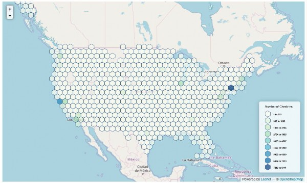
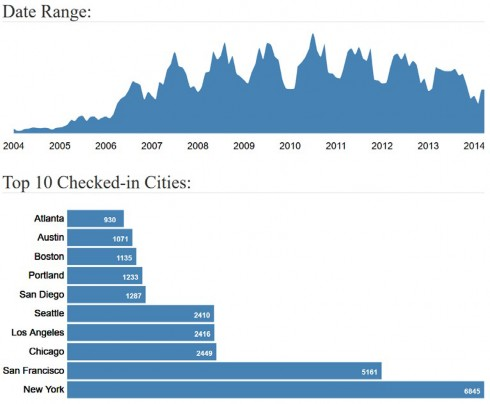
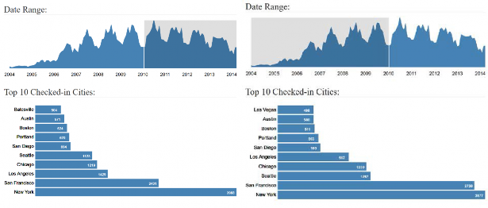
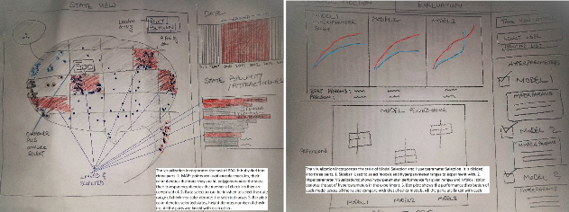
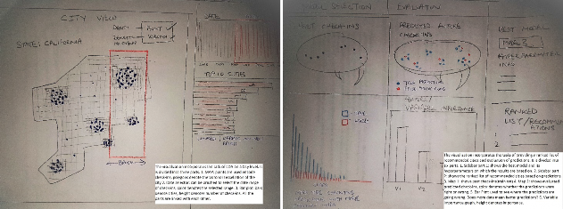
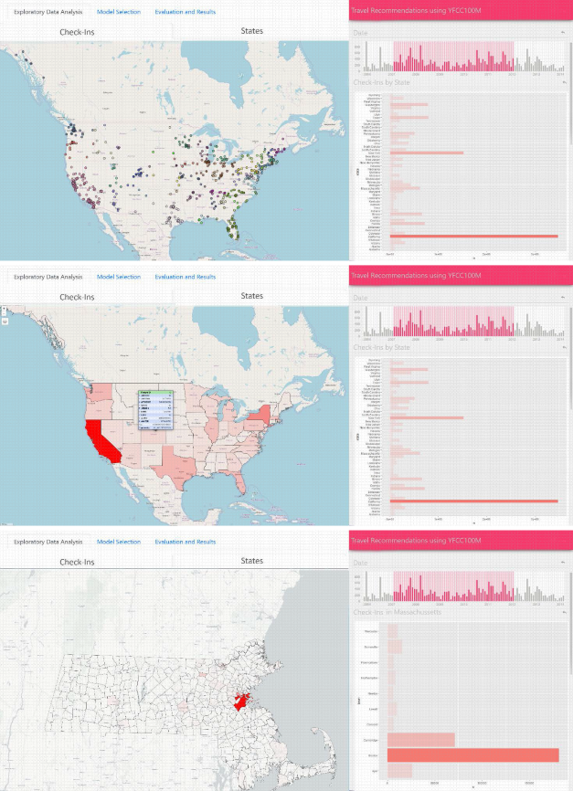
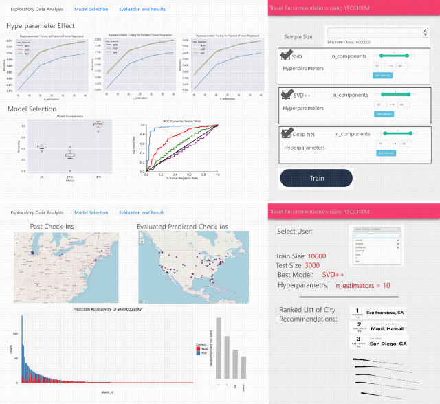
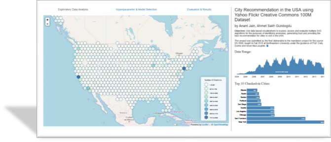
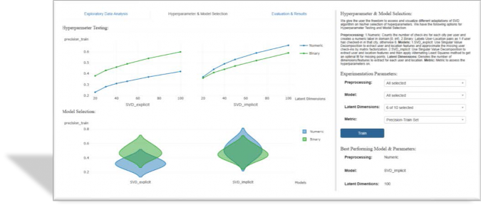
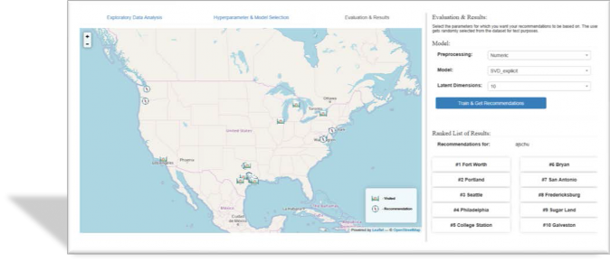

by Anant Jain, Ahmet Salih Gundogdu
DS 5500 Fall 2018 --- Prof. Cody Dunne, Northeastern University
While the procession of transportation industry in the last hundred years enabled more travelling options to the people, it wasn't until just half a decade ago that the egression of social media platforms, shared thriftiness and GPS equipped mobile phones enabled these digital footprints of human mobility to be available publicly to the entire world. In this new world of shared economy, travelling cost per person has reduced due to which more and more people are moving from one region to another leaving behind their digital trails on social media sites. Although it might be still unclear about how continuing our online existence is going to affect the future of the human race, one thing is for certain that all this data that we are producing every day, exemplifies an inexhaustible resource which can be utilized for innumerous scientific studies.
The geo-location part of travel check-ins allows researchers to concentrate their focus on regions like populated cities. More than half of the population of the entire world resides in them. However, these cities aren't studied just because a lot of people live in them, but also because they have a rich history of development and growth, which lures many travelers and tourists from all over the world.
In this era of social networking sites, people's behavior online could help us have an idea about their tastes and preferences. Social check-ins, which store geo-tagged information about users, can be utilized by researchers and businesses to investigate these preferences and improve their services. In this project, we utilize the travel check-in data and use data-based visualizations to explore, assess and evaluate multiple SVD algorithms for the purposes of identifying anomalies, generating trust and providing the best recommendation for cities to visit in the USA.
We are using Yahoo Flickr Creative Commons (YFCC100M) dataset which is known to be one of the largest assemblages of multimedia check-ins ever created. It is publicly hosted on AWS and was released under the Yahoo Web-Scope program. It comprises of hundred million media objects dating between 2004 and 2014. Each line contains the metadata for one media object. The metadata is cut and tab-separated into following field names: media identifier, user identifier, date taken, date uploaded, capture device, location (longitude & latitude, if available), accuracy and Creative Commons license it was published under. In addition, metadata fields like object title, machine tags, user tags, media description and a link from where the media object can be downloaded are listed.
We pruned the data first by eliminating unwanted columns in order to make it workable with limited RAM; and then by omitting records that weren't geo-tagged (i.e. more than 50%). Since we are focusing the study only on the cities in the US, we further filtered the data to records checked in the US. To do so, an expansion of YFCC100M containing the reverse geocode information of all records was utilized. After both pruning and merging, we were left with about 16 million records and the following set of columns.
Column | Description | Data Type |
pid | Unique media identifier | categorical |
address | Reverse geocode information | categorical |
user_nickname | User identifier | categorical |
date_taken | Date the media object was created | ordinal |
longitude | Longitude of the location the media object was checked at. | quantitative |
latitude | Latitude of the location the media object was checked at. | quantitative |
url | Link from where the media object can be downloaded | categorical |
town | City the media object was checked in, extracted from address column | categorical |
state | State the media object was checked in, extracted from address column | categorical |

The above visualization shows a hex-binned map of a sample of data. Hex-bins are used to encode location of check-ins and color is used to encode number of check-ins in that area. We see most of the check-in concentration is around cities like New York and San Francisco. The middle of the US has the least number of check-ins. It seems most of the popular cities which users like to travel to are situated on the coasts of the US.

The above visualization shows an area chart which encodes date data on the x axis and number of check-ins on the y axis; accompanied by a bar chart which encodes the top-10 cities on the y-axis and number of check-ins on the x-axis in the specified date range. We clearly see the leading cities across the US.
Fun-fact: As we can see in the chart below, before 2010, the difference in the number of check-ins between that of New York and San Francisco isn't that much. But, after 2010, We see New York almost doubled it's count of check-ins and became the sole most popular city in the US.

Index # | "Domain" Task | Analytic Task | Search Task | Analyze Task |
4 | Examining and evaluating the model performance of the recommended places against the given user’s travel history | Compare | Locate | Present |
3 | Generate a ranked list of recommendations | Sort | Explore | Present |
2 | Visualize different models and hyperparameters for assessment of the best set of modeling parameters to use. | Compare | Explore | Discover |
1 | Exploratory Data Analysis | Compare | Explore | Discover |
Our visualizations will be primarily developed for "discover" (i.e., exploratory visualizations), "present" (i.e., communicative visualizations) consumptions. These domain tasks will enable our potential users to have more understanding and flexibility of choosing different models for the location recommendation task. More on why we chose the specified tasks are as follows:
Index #4: As the model will predict the given user's tendencies as a number, we will be sorting the top 10 locations rather than calculating the proximity to the real location. Here we will evaluate our model performance using Precision@10 metric which is looking at the user's top ten location preference and predicted top 10 recommendations.
Index #3: Physically demonstrate and deliver the models’ outputs to the user.
Index #2: Enable user to choose their modeling approach (at least 2 different SVD adaptations) and tune their parameters and evaluation metric.
Index #1: Get an idea about the data on which all the analysis is based on.
The users of the end product will be researchers and machine learning engineers who are interested in recommendation systems, but the UI is going to be designed in such a way that a normal traveler who want some good recommendations could also make use of the tool.
We give the user the freedom to assess and visualize different adaptations of SVD on his/her selection of hyperparameters.
We have the following options for Hyperparameter Testing and Model Selection:
Numeric: Counts the number of check-ins for each city per user and creates a numeric label in domain [0, inf).
Binary: Labels the user-location pair as 1 if user has checked-in in that city, else 0.
SVD_explicit: Use Singular Value Decomposition to extract user and location features and approximate the missing user check-ins by matrix factorization.
SVD_implicit: Use Singular Value Decomposition to extract user and location features and then apply Alternating Least Squares method to get an optimal fit for missing points.
Precision-Train Set: Use Precision@10 metric which looks at the user's top 10 location preferences and compare it with the predicted top 10 recommendations for the Train Set.
Recall-Train Set: Use Recall as metric to assess the user's top 10 location preferences and compare it with the predicted top 10 recommendations for Train Set.
Precision-Validation Set: Use Precision@10 metric which looks at the user's top 10 location preferences and compare it with the predicted top 10 recommendations for the Validation Set.
Recall-Validation Set: Use Recall as metric to assess the user's top 10 location preferences and compare it with the predicted top 10 recommendations for the Validation Set.
We started with drawing up some preliminary sketches based on our tasks. As it can be seen we were planning to have point and polygon layers on the EDA map initially. But we soon realized how over plotted it is going to look giver our dataset size. Polygon layers were supposed to the fix for that but they didn’t help much either if the user changed the level of the map. We experimented and researched on what would be the best encoding for the job and we settled with hex-bin layers.
Hyperparameter Testing was implemented exactly ass planned at the initial stage. But, for Model Selection, as per the feedback we got from the instructors, we decided to change from box-plots to violin plots.
The biggest changes were made to the Evaluation and Results visualizations. We decided to drop Feature importance graph and integrate everything else on one big map. This resulted in a much cleaner UI design.
Preliminary Sketches:


Digital Sketches:


We decided to divide our final Visualization into three sections:
Exploratory Data Analysis
Hyperparameter Testing & Model Selection
Evaluation and Results
Each section took care of at least one task in our tasks table. All the three section are comprised in a Bootstrap UI with a main panel and a side-bar panel.
We’ll go by each section and discuss its purpose, design justification and packages utilized for coding.

Exploratory Data Analysis is the first tab on the UI.
The main panel shows an interactive leaflet map with hex-binned layers. The position of the hex- bins ideally encodes location of the aggregated check-ins at each zoom level of the map. The color of the hex-bins encodes the number of check-ins in that aggregated region. A Green-Blue color scale from ColorBrewer is used. A user can investigate the number of check-ins contained in each hexagon by hovering the mouse pointer over the hexagon (this is going to show a tipsy tooltip).
The side-bar panel consists of an area chart and a bar chart made using D3. The area chart encodes the number of check-ins on the y-axis and check-in dates on the x-axis. This chart can be brushed and is linked to the map and the bar chart. Meaning, a user can filter the data shown by the visualizations on the page by date just by brushing the area chart. The bar chart encodes the top 10 checked-in cities/towns on the y-axis and the number of check-ins on the x-axis. As it is linked to the area chart, it updates accordingly with respect to the brushed date-range.

Hyperparameter Testing & Model Selection is the second tab on the UI.
The main panel is divided into two parts. First shows a multi-columned line chart to explore hyperparameter test results. The y-axis encodes the metric to evaluate the hyperparameters on and the x-axis encodes the latent dimensions of user’s choice. The column encodes the type of model for which the user wants to view the test results on. Second shows a violin plot encoding the metric on y-axis and model on x-axis. Area inside the violin denotes the distribution of metric for different latent dimensions chosen by the user. The color for both the chart encodes the types of preprocessing the user has chosen. All the visualizations in this section were made using plotly.
The side-bar panel has bootstrap and multi-select input elements so that the user can input his/her’s set of hyperparameters and models to explore and assess. Once the user hits the train button, the page makes a request to the flask server to get the data for the visualizations and show the best set of hyperparameters for entered inputs in the sidebar. The page fires a request to the get the data for default parameters when the user first switches to the tab.
It might take some time for the page to receive the data from the server therefore a user is going to see the UX gif in the main panel. A loading hexagonal gif means the page has fired up a query to the server and is fetching the data for the visualization.
Lastly, we have Evaluation and Results on the third tab of the UI.
The main panel shows an interactive leaflet map with animated uncopyrighted icons to encode visited towns (scenery gif) and recommended towns (compass gif) with details-on-demand hover functionality.
The side-bar panel accommodates the input elements for the final set of parameters the user wants his recommendations to be based on and a ranked list of results/recommendations for a random user which automatically gets selected from the database.

short summary of work completed and areas for improvement/future-work). Meaningfully wraps up project and has good future directions. Additional non-required sections may be added to the website to thoroughly explain/frame the final project.